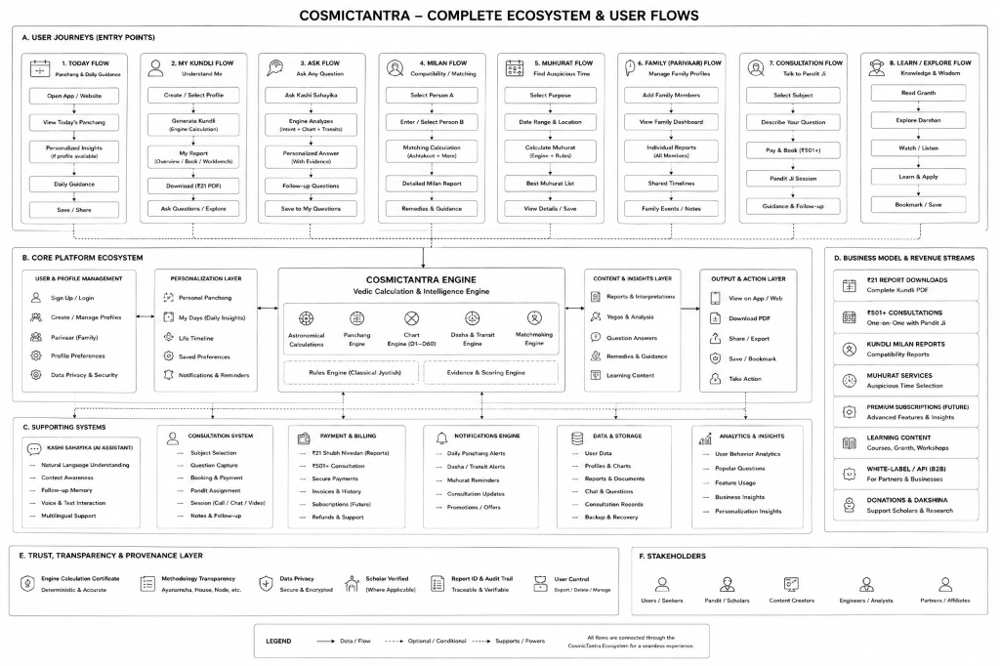
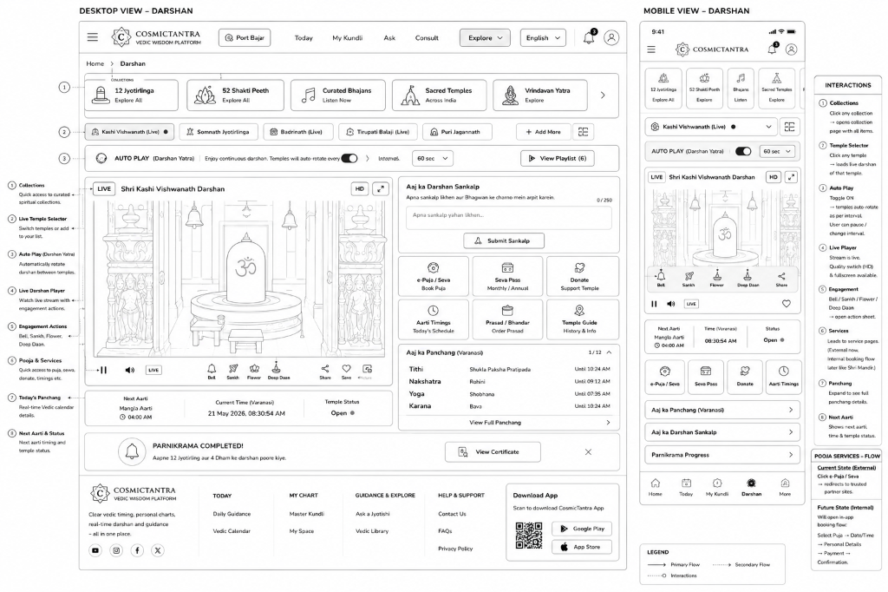
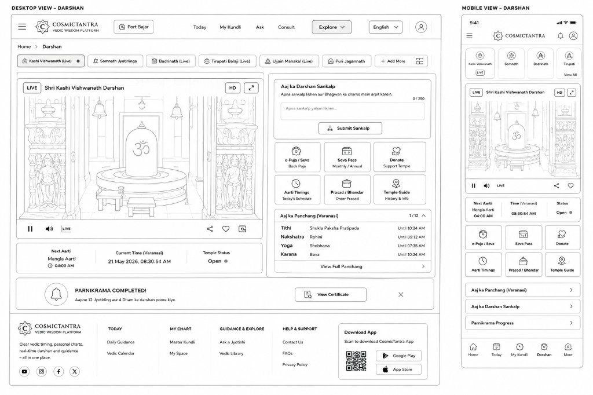

Overview & Problem Framing
In India, Astrology (Jyotish) is not horoscopes, entertainment, or fortune-telling. It operates as cultural Decision-Support Software embedded into the daily decisions of 1.4 billion people—spanning marriage alliances, career timing, medical surgeries, property investments, and sacred rituals.
The Core Challenge: How do you bridge a 5,000-year-old expert knowledge system with modern digital expectations—making astronomical math accessible to everyday seekers without diluting calculation precision or replacing human scholarly judgement?
Pillar 1: "Shraddha" (Reverence) Meets "Vigyan" (Science)
Users reject spiritual apps that look like generic corporate SaaS dashboards (cold blue grids) or superstitious scam sites (neon yellow promotional banners). The visual design language evokes entering an 18th-century stone Jantar Mantar observatory at dawn.
Subah-e-Banaras (Day Palette)
Warm Sandstone, Ganga Clay, Temple Brass, and Terracotta. Sunlit, high-contrast readability built for Tier 2 and Tier 3 Indian mobile devices.
Kashi Sandhya (Night Palette)
Cosmic Obsidian, Temple Gold, and Diya Amber. Cinematic visual framing honoring the sacred ghats of Varanasi.
Unassailable Mathematical Precision: Calculations are powered by true Sidereal Ephemeris using Lahiri Ayanamsha (24°11'04"), rigorously benchmarked against NASA JPL planetary ephemeris data. The UI declares mathematical conventions openly rather than obscuring calculation nuance.

Pillar 2: Kashi Sahayak V3 — Zero-LLM Conversational Engine
Most conversational AI fails in sacred domains because LLMs hallucinate dates, astrological alignments, and rituals. I architected Kashi Sahayak around a strictly deterministic conversational backbone:
- Deterministic Pipeline: LanguageNormalizer → WeightedIntentMatcher → EntityExtractor → ConversationState & FlowStack → Deterministic Router → Authored Template Engine.
- Multi-Intent Interruption Architecture: Real users interrupt guided workflows. If a seeker in the middle of a birth-details intake suddenly asks "Aaj Rahu Kaal kab hai?" (When is Rahu Kaal today?), Kashi calculates the answer from the ephemeris engine, suspends the birth intake into an immutable LIFO FlowStack, and provides an interactive chip to resume without losing state.
- Indic Token Normalization: Custom boundary handling built specifically for Hindi and Hinglish semantics, avoiding ASCII regex pitfalls across Devanagari Unicode ranges.

Pillar 3: Progressive Kundli & Panchang Experience
We designed the intake and visualization around strict progressive disclosure to prevent overwhelming non-experts:
- 4-Step Progressive Intake: Name → Date of Birth → Time of Birth (with certainty flags: Exact / Approximate / Unknown) → Strict geocoding resolution (no silent fallback to wrong cities).
- Consumer First Viewport: An "At a Glance" summary card highlighting Lagna, Moon Rashi, Janma Nakshatra, and Active Mahadasha/Antardasha.
- Scholarly Workspaces: Deeper tabbed workspaces containing full divisional charts (D1 to D60), Ashtakavarga matrices, and planetary dignity tables for experienced astrologers.


Pillar 4: Native Indic Operations
Impact & Live Verification
CosmicTantra represents a benchmark in cultural UX engineering—demonstrating that ancient, highly specialized knowledge systems can be modernized into high-trust, production-grade digital platforms without sacrificing authenticity.